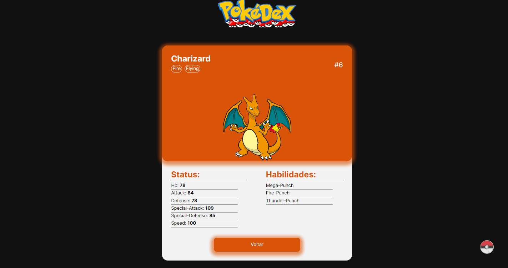

<Descrição/>
Aplicação web criada com o intuito de praticar os conceitos de Angular e consumo de APIs (PokeAPI), onde o produto final foi uma listagem dos pokemons da primeira geração, separados por tipos. Cada um possui características diferentes, as quais podemos observá-las ao clicar no card de cada um.
<Tecnologias/>
<Screenshots/>
Home
Página inicial do web site com a listagem dos pokemons e opção de busca da primeira geração.
Informações
Página com as informações do pokemon selecionado
